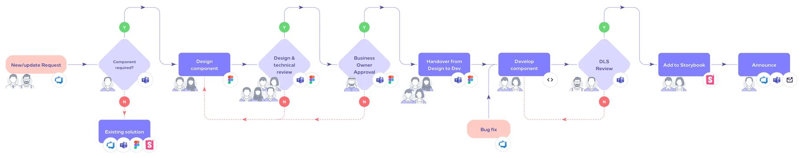
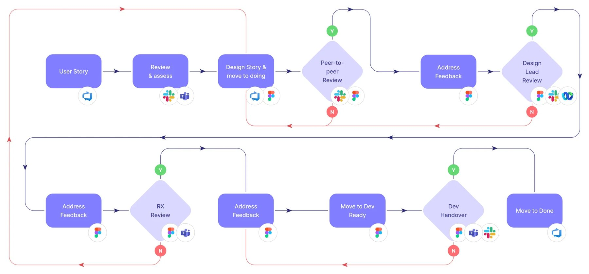

DLS Custodian
Do we need this, or does it exist?
Work / IBM × Riyadh Air · 2023–24
 ×Riyadh Air
×Riyadh AirThe operating model behind the Riyadh Air system: roles, one front door, four gates and a sprint rhythm.

01 the brief:
IBM, Riyadh Air's design team and Publicis Sapient shared one library, with requirements changing weekly.
companies on one design system
named roles, each with one decision
quality gates from request to release
playbook cases, so nobody guessed
Snowflakes: three squads, three date pickers
One front door that checks the library first
Figma said one thing, Storybook another
Four gates, the last one: Figma matches code
Disagreements settled by whoever spoke last
One named owner for every decision
02 roles:
Not job titles: the one question each role answers. Once the names were on a page, half the arguments stopped.
Do we need this, or does it exist?
What should it be?
Is it good enough?
Is it right for Riyadh Air?
Can we build it well?
What do our users need?
03 operating model:
The middle path most mature systems end up on.
One team builds for itself. Fine until the second product.
One team builds for all. Consistent, and everyone queues.
Everyone contributes. Fast, until nobody can say no.
A central team curates. Squads contribute through one front door.
04 one front door:
The cheapest component is the one you don't have to build.
Requests arrived in chats, reviews and corridors
One ticket in Azure DevOps, triaged by the DLS Custodian
Three squads built three date pickers
“Does it exist?” first. Many requests ended with a link, the same day
05 request to release:
Fail a gate and the work goes back one step, not back to the start.
Is it needed, and where?
Every state, EN and AR
Built and in Storybook
Usage, do and don't
Published and announced

06 squad reviews:
Peer, design lead, Riyadh Air, then a walk-through with engineering. Every “no” came back with comments.

07 contribution:
A designer, a developer, even a copywriter. The person who hit the problem started the change.
DS-214In reviewAn illustrative ticket, following the five questions every submission answered.
Copy the Figma playground file
A ticket with five answers
An open forum; the checklist decides
Variants, states and props, with a developer
08 rituals:
People knew when to bring a proposal, when it would be decided, and when they'd see it ship.
An illustrative sprint. The routines are the ones the teams ran; their exact days moved with each calendar.
09 what changed:
Every decision had a named person to settle it.
Squads contributed through one front door.
Checked at four gates before release.
One rhythm, held from zero to launch.
Write down who decides before you write down how.
Put criteria on every gate. A review without a checklist is an opinion.
Let anyone contribute, but curate centrally.
10 for your team:
Each part of this case study maps to how we work with clients now.
$1,500
In this case studyMap who decides what today, where requests come from, and where design and code drift.
See what's included$5,900
In this case studySet up the front door, the gates and the roles alongside your core system.
See what's included$2,900/mo
In this case studyRun the rituals with your teams until they run themselves.
See what's includedThe work above was done by our founder as an IBM employee. Layer One now runs the same method as a studio, for product teams of any size.
Aniket Pandey worked on this as a design system designer at IBM (2023–24), with IBM design and engineering, Riyadh Air's design team and business owners, and Publicis Sapient. This is IBM client work done as an employee, not Layer One client work. Diagrams belong to Riyadh Air and IBM and are shown for portfolio purposes.